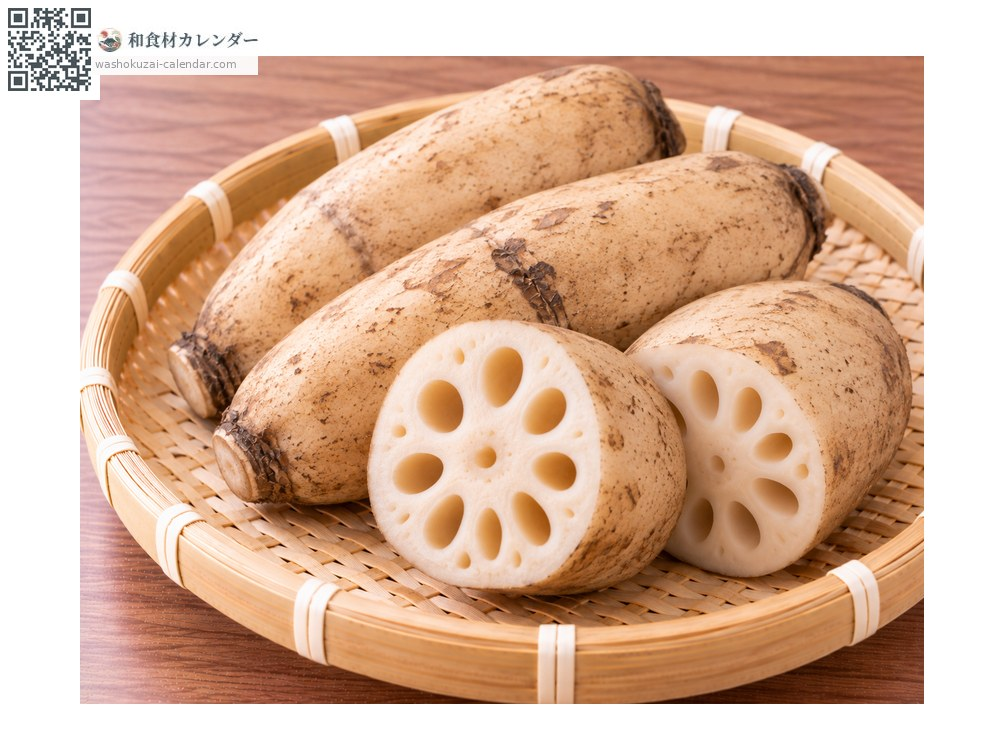
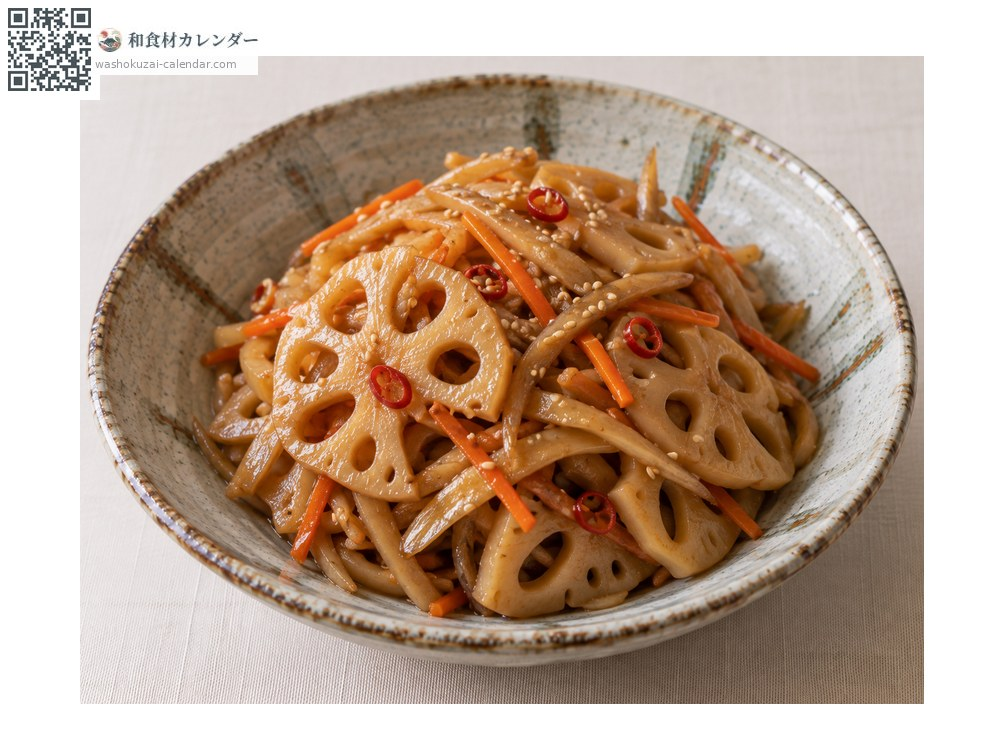
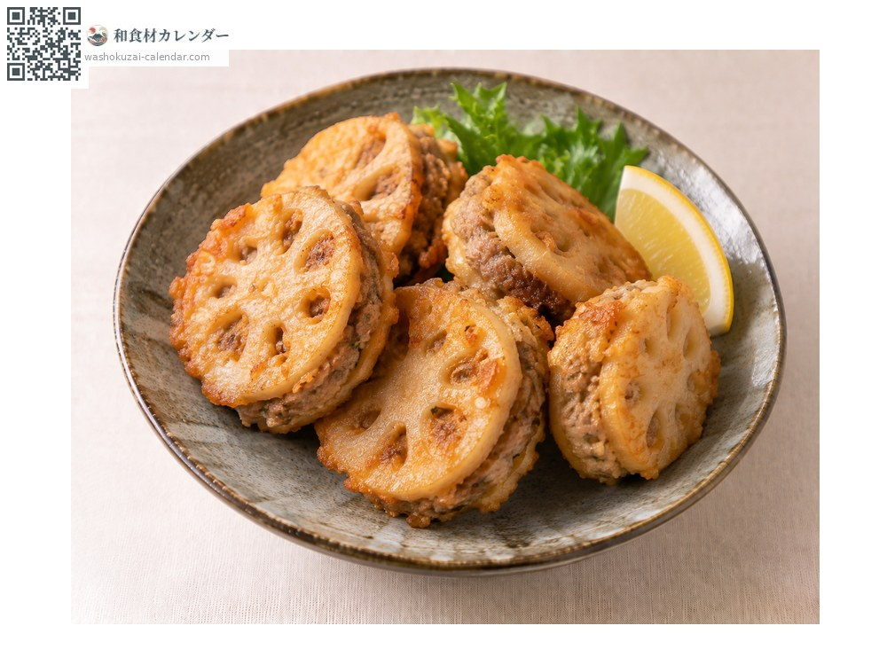
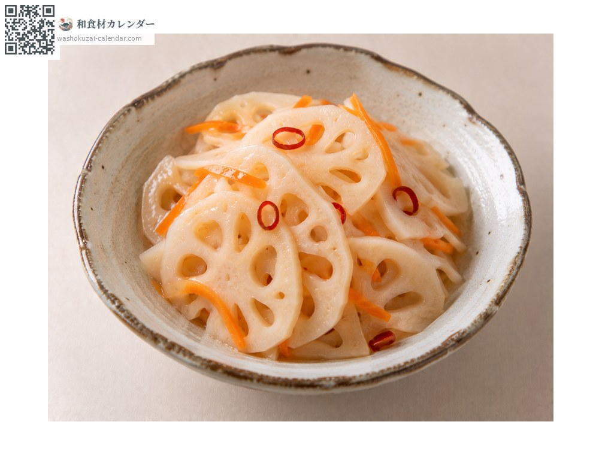
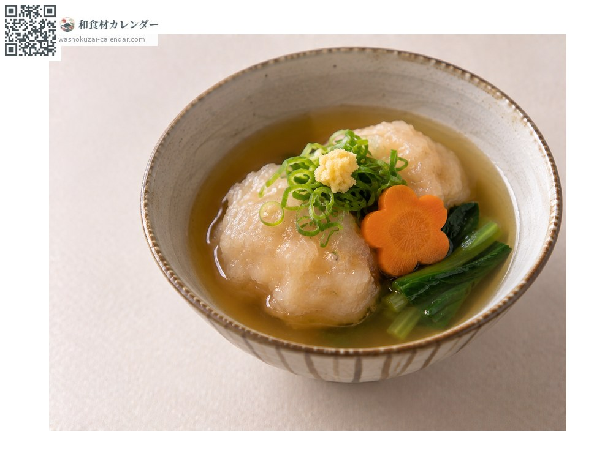

蔬菜
莲藕
レンコン れんこん renkon
别名renkon、hasu
应季时期为1月、2月、10月、11月、12月

应季时期
1月
2月
3月
4月
5月
6月
7月
8月
9月
10月
11月
12月
应季有供应
烹饪方法

金平（切丝甜咸拌炒）
切薄片热炒。

莲藕夹肉炸
夹入肉馅后油炸。

甜醋莲藕
以甜醋腌渍。

莲藕泥丸子
磨成泥捏成丸子，口感黏弹。
挑选方法
孔洞大小一致、切口白皙。沉甸甸且没有伤痕。
保存方法
切口用保鲜膜盖住冷藏。接触空气会变色，泡醋水可保持白皙。
主要产地
小知识
靠近新芽的前端较柔软，越接近根部黏性越强。可依部位选择烹饪方法。